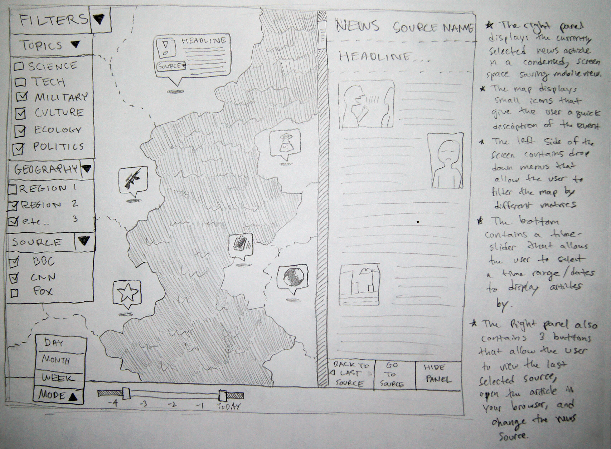
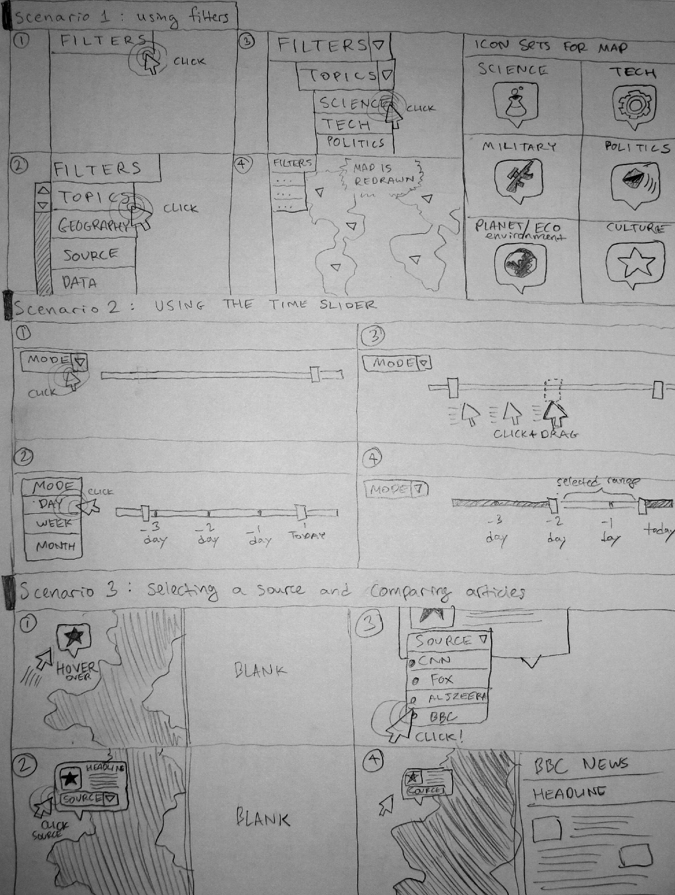

Final Project #8
Digital Prototype #2, Post Evaluation
I made several changes to the software, documented below; some changes need to the backend to be completed.
-bottom right buttons turn into select pointer in hover, and dont have functionality
-weird clipping fiters panel
-does not resize well
-change military icon
-add collapse functionality to filters and side panel
-add zoom in/out gui
-timeline numbers are too ambiguous, make actual dates
-allow user to drag right panel width
-go to source should open a new tab
-geography should do stuff
-add help/documentation/tutorial
-popup is kind of confusing, add way to know if youve read a source
http://adeka.github.io/NewsAgg/
Digital Prototype
Run this in Google Chrome on a desktop.
This is a paper prototype representation of a webapp called NewsAggregator. This webapp is meant to allow users to look at a visual representation of daily, global news events, placed on an interactive world map. This webapp allows users to quickly find relevant news articles and compare and contrast them to different news sources.
Tasks:
1) View The same article from 2 different sources
2) View all technology articles on the map
3) View all articles from the last 3 days
http://adeka.github.io/NewsAgg/
Group Project Homework #5: Paper Prototype Usability Testing
Group Project Homework #4
Interaction Scenarios:
Andy comes home from his day of classes. Tired, he decides that before going to bed he will catch up on some global news. Andy opens his laptop, and browses to the NewsAggregator webapp in his browser of choice, Google Chrome. As the webapp opens, news from the last 3 days are displayed to his geographically, since when he last left the site the time slider was set to 3 days. Andy only wants to see news from today, so he drags the time slider at the bottom of the page to the left to set it to only one day. The screen updates so only today�s news is shown. Andy sees an icon on the screen over Syria that indicates a political article. Andy clicks on this icon and after the icon expands to show more options, he clicks on the �go to source� button to see the article on the site itself. He begins to read the article after it is opened in another tab in his browser. After reading a couple paragraphs, Andy decides he wants to see related articles to the one he read, so after returning to the tab that has the NewsAggregator webapp open, he clicks back on the article and after the icon expands to show more options, he clicks on the filter button. After looking through the titles of the related articles, Andy finds that none are particularly interesting, and closes his laptop and goes to bed.
Sandy is having a busy day at work today, but as noon rolls around she decides to take her lunch break. While sitting down with the lunch that she brought from home, she opens up her work computer and browses to the NewsAggregator website. As the page loads, she sees articles from around the world from today only, since the time slider was set to that last time she used to app. She clicks on an article from Germany and after reading the title, decided that she wanted to see more sources to ensure that the article was valid. She clicks on the icon for the article, and after the icon expands to show more options, she clicks on another source with a similar article. She repeats the same process one more time to make sure, and after being sure the article is valid, decides to log off and get back to eating her lunch.
Mike is dining out at the Red Lobster one night, and decides to check the NewsAggregator website on his phone because he is bored waiting for his food. Mike recently has been worried about the Ebola virus, specifically about the possibility of it spreading back to his family in Ukraine. So as Mike opens up the webapp, he types in the search window at the top of the page, �Ebola�. The map updates with only articles that relate to the phrase �Ebola�. He sees a new article he hasn�t read before in Turkey. Apparently the virus has surfaced in that area. This worries him a bit, and as he worries, he also realizes that the time slider was set only to one day. He slides it to 7 days to show Ebola articles from the last week. He sees that no new articles have surfaced recently, and none at all in the Ukraine area. He relaxes a bit, and locks his phone so he can continue eating.
Storyline and GUI Design Sketches
Click the images to view them, you can scroll through the lightbox or save them.


Conceptual Design Document
Metaphors:
1) Browsing through a newspaper, trying to find the news section. Once you find the news section, looking through the individual stories and columns, trying to find something that will interest you, instead of just being fed information.
2) Comparing and contrasting article from different news sources by opening multiple windows side by side.
3) Sorting through a big pile of Lego pieces, trying to find specific ones that go together, either due to color, shape or size.
4) Looking through your pantry for specific ingredients to a dish you are trying to make with little to no time.
Activity Scenarios
1) Andy, a college student, comes home from a long day of classes. He is tired, but wants to catch up on some global current events. Andy opens NewsAggregator and sees the last 3 days of news visualized on the map. However, Andy needs to see today�s news. He selects the time slider, and moves it to the current date. Andy�s screen is populated by icons depicting today�s news events. Andy finds an article that interests him, describing the events in Syria. Andy wants to see similar stories, so he selects the news article that interests him, clicks �filter� and prints the stories he wanted to see. Then Andy goes to bed.
2) Sandy is a young urban professional working in the finance sector of downtown Boston. She is having a busy day, but noon rolls around and Sandy wants to eat lunch, relax, and get up to speed on global current events. Sandy doesn�t have the time to open the same news article from multiple sources; especially not when she�s eating delicious chicken parmesan. Sandy launches NewsAggregator.com and sees numerous interesting articles, from today�s date, all around the world. One article in particular interests her, a story of renewable energy usage in Germany. She sees information that she wants to verify with other sources, so Sandy clicks on the article, and selects the news sources she wishes to check. Now Sandy can rest easy knowing that Germany indeed does utilize renewable energy the way she expected from the first article she read.
3) Mike, a middle aged immigrant from Ukraine, is dining out at Red Lobster, alone. Mike is rather lonely, but has the NewsAggregator WebApp to help him stay informed and knowledgeable on world events. Mike has been fascinated by the Ebola crisis in Africa, and is worried it may spread to Ukraine, and affect his family. He has been tracking the growth of Ebola cases throughout the world by comparing the dates of dozens of articles on our WebApp. He launches the app, and sees that another case of doctors dying to Ebolavirus has popped up in Turkey. Worried that this may lead to more problems, he selects the time slider range handles, and moves them apart by 1 week. He can clearly see all news stories related to Ebola within the last week, visualized on the map. He can also observe that no other stories apart from todays have popped up anywhere near Turkey. Using this information, Mike can assume his family is safe, and eat his lobster in peace.
Final Project Requirements Analysis
Final Project Proposal
Problem:
Users need a way to browse the internet and see news sources displayed from various sources, and visualized on a map.
Typically, users will need to go to numerous websites to get information on world events, and even then,
users will not know the reliability of the information and need a way to cross reference it. Also,
there is no way to quickly see a collection of world events, on a day-by-day basis, visualized on a map, geographically.
Target Users:
The target user of this application is anyone who wishes to read global news, anyone who wishes to see these events visualized on a map,
with relationships based on various options as well as a way to filter the news articles. Mainly this is for users
who need a way to see the same news article from multiple sources, and to be able to quickly read and compare these articles
to verify the validity of the statement being made.
Solution:
The solution is a web application developed in Javascript, CSS/SASS/SCSS, and HTML/Handlebars. The solution will be based
on the Yeoman Web App generator, and make use of node package manager to employ SASS (syntactically awesome style sheets)
and Handlebars (an html static site web templating language). These components, along with JQuery standard GUI tools,
will allow us to create a webapp that is useable on any device, and has a responsive GUI that adapts to different screen sizes.
This icon below opens up an image that describes the concept art:

In this image you can observe the following basic GUI components:
-The Filters Panel
--This panel will display all of the ways the user can sort the articles. Geography, Topic and News sources
--will poll data from news source API's (if time permits us to build a backend)
--Data relationships will allow the user to make inferences between articles using keywords and data.
-The Article Panel
--This Panel will display the currently selected article in a mobile version state, to conserve screen space.
--This sections also contains several buttons to give the user more options with the article viewing
-The Map
--This will take up the most screen space, and display news articles by date (can be changed using the timeline)
--clicking on an article on the map loads it in the right-side panel, using the mobile version
{kind=link}
{kind=link}
{kind=link}
{kind=link}
{kind=link}